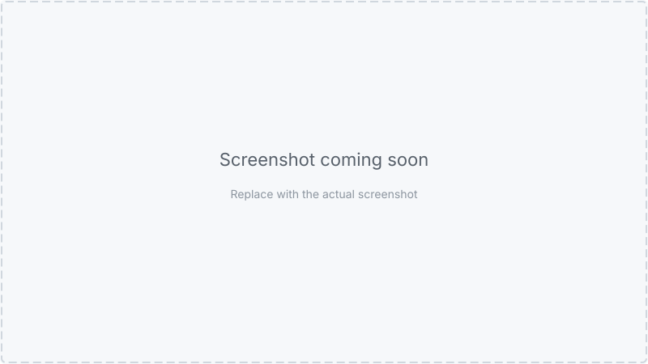

We hit a wall. We had a perfectly organised Postman collection, a clean CI pipeline, and a desire to run multi-step API flows automatically on every pull request. The only thing standing between us and that goal was a paywall.
Here’s how we got around it — without duplicating a single request.
Our backend exposes a JSON REST API. We use Postman to document and test every endpoint. After a while, individual endpoint tests started feeling hollow — they told us each request worked, not whether the API held together as a system.
What we really needed to validate was sequences. The kind of journey a real client goes through:
Or a more complex one involving two users — an admin who creates an organisation and sends an invitation, and a member who logs in separately and accepts it. Each step depends on the one before. The invitation ID from step four has to reach step five; the access token from step one has to reach every authenticated request after it.
These aren’t just endpoint tests. They’re user journeys expressed as API calls.
Postman has a feature built for exactly this: Flows. It’s a visual canvas, distinct from the Collections view, where you drag saved requests onto a board, connect them with arrows, and define the sequence without writing orchestration code. Variables pipe automatically between steps.

We started building flows there. They were clear, maintainable, and made it immediately obvious how the API was meant to be used.
Then we tried to run them in CI.
Postman has a separate CLI tool (distinct from
Newman, Postman’s open-source
collection runner) that includes a postman flows run command. We got excited. We
read the docs. Then we hit this:
postman flows runrequires a Postman Enterprise plan.
postman flows run requires an Enterprise
plan.
We’re a small team. Enterprise pricing for a test runner felt like a lot.
The community thread on running Flows in CI/CD had been open since 2023 with no free solution. The GitHub issue requesting Newman support for Flows had plenty of 👍 reactions and no resolution.
The fallback recommendation was the same everywhere: convert your Flows to a Collection and use Newman.
Which brings us to the real problem.
Newman is Postman’s open-source CLI runner. It takes a collection JSON file and an optional environment file, fires every request in sequence, and reports the results. Free, no account required.
Newman can organise requests into folders and run a specific folder with
--folder. The obvious approach: create a folder per flow, put the requests in
order, and run each folder. Sounds right, right?
There are two problems.
First, there’s no sequencing across folders. If your flow needs
requests from different folders — a login from Authentication/, a create
from Groups/ — you can’t compose them without copying them.
There’s no concept of “run this request from over there, then this one from
here.”
Second, that duplication compounds fast. Our collection had duplicate
“Invite User” requests — one under Organisation, one under
Groups. Every time the endpoint changed, we’d have to update multiple
places.
Postman Flows solve this elegantly on the canvas — you drag the same request block into multiple flows without duplicating anything. In a Collection, there’s no concept of a reference or alias.
setNextRequest()
Newman supports pm.execution.setNextRequest(). Call it from a test script and
Newman will jump to a different request instead of continuing sequentially.
The idea: keep all requests in a Requests/ folder (defined once), add a
Flows/ folder with lightweight entry-point requests, and have each entry point
set up a sequence of step names. A collection-level test script acts as a router:
// Collection-level test script — the "flow router"
const stepsJson = pm.globals.get('_flow_steps');
if (!stepsJson) return;
const steps = JSON.parse(stepsJson);
const idx = steps.indexOf(pm.info.requestName);
if (idx === -1) return;
const nextIdx = idx + 1;
if (nextIdx < steps.length) {
pm.execution.setNextRequest(steps[nextIdx]);
} else {
pm.globals.unset('_flow_steps');
pm.execution.setNextRequest(null);
}
We got excited. We ran it. This appeared in the terminal:
Attempting to set next request to Organisation admin login
And then Newman stopped. One request executed.
The issue: when you pass --folder "Organisation creation" to Newman, it only
loads the requests in that folder. Organisation admin login lived in
Requests/User/ — a completely separate folder Newman hadn’t loaded.
From its perspective, that request didn’t exist.
setNextRequest() works across folders when you run the entire collection
without --folder, but then you have no way to run just one flow. The state
management quickly becomes unmanageable.
We stepped back and asked a simpler question: what does Newman actually need?
Newman needs a collection file. It doesn’t care where that file came from. So instead of trying to make the collection flow-aware at runtime, we generate a temporary, flat collection containing exactly the requests for a given flow — pulled from the main collection — and run Newman against that.
Requests are still defined exactly once. The flow definition is a tiny JSON file listing step names in order. A Node.js script does the assembly.
// dev/Postman/flows/org-creation.json
{
"name": "Organisation creation",
"description": "Admin logs in, creates an organisation, edits it, and views it.",
"steps": [
"Organisation admin login",
"Create Organisation",
"Edit Organisation",
"View Organisation"
]
}
// dev/Postman/flows/member-invitation.json
{
"name": "Member invitation",
"description": "Admin creates an org, member logs in, admin invites them, member accepts.",
"steps": [
"Organisation admin login",
"Create Organisation",
"Organisation member login",
"Invite member",
"Accept invitation"
]
}
run-flow.js takes two inputs that already exist in any Postman project:
The script reads both, looks up the named requests, assembles a temporary collection, and hands it to Newman:
// dev/Postman/run-flow.js (abridged)
function findRequest(items, name) {
for (const item of items) {
if (item.item) {
const found = findRequest(item.item, name);
if (found) return found;
} else if (item.name === name) {
return item;
}
}
return null;
}
const flowItems = flowDef.steps.map(stepName => {
const req = findRequest(collection.item, stepName);
if (!req) { console.error(`Step "${stepName}" not found`); process.exit(1); }
return req;
});
const tempCollection = {
info: { ...collection.info, name: `Flow: ${flowDef.name}` },
item: flowItems,
};
newman.run({ collection: tempCollection, environment: envFile, ... });
project-root/
├── mock-server.js ← demo mock API (npm run mock)
├── test.js ← starts mock, runs all flows, stops mock (npm test)
└── dev/
└── Postman/
├── collection/
│ └── my-api.postman_collection.json ← exported from Postman
├── environments/
│ ├── environment.mock.postman_environment.json ← used by npm test (demo)
│ ├── environment.local.postman_environment.json ← your local API
│ └── environment.ci.postman_environment.json ← CI / staging
├── flows/
│ ├── org-creation.json
│ └── member-invitation.json
└── run-flow.js
[test] Starting mock server on port 3000...
[test] Server is ready.
▶ Running flow: Member invitation
Steps: Organisation admin login → Create Organisation → Organisation member login → Invite member → Accept invitation
→ Organisation admin login
POST http://localhost:3000/api/auth/login [200 OK, 366B, 23ms]
✓ Status code is 200
✓ Response has access_token
→ Create Organisation
POST http://localhost:3000/api/organisations [201 Created, 368B, 3ms]
✓ Status code is 201
✓ Response has organisation id
... (remaining steps) ...
┌─────────────────────────┬──────────┬────────┐
│ │ executed │ failed │
├─────────────────────────┼──────────┼────────┤
│ requests │ 5 │ 0 │
│ assertions │ 9 │ 0 │
└─────────────────────────┴──────────┴────────┘
✅ Flow "Member invitation" passed.
✅ Flow "Organisation creation" passed.
[test] Stopping mock server...
npm test is self-contained. It starts the mock server, runs every flow against
it, and stops it afterwards. No real API, no credentials, no network required.
npm install
npm test
To run a single flow against the mock server:
# Terminal 1 — start the mock server
npm run mock
# Terminal 2 — run one flow
ENV=mock node dev/Postman/run-flow.js "Organisation creation"
ENV=mock node dev/Postman/run-flow.js "Member invitation"
When adapting this for your own project, replace the mock with your real backend. Export your Postman collection and environment files into the same folder structure, then run:
# Against a local dev server (uses environment.local.postman_environment.json)
node dev/Postman/run-flow.js "Organisation creation"
# Against a staging or CI server (uses environment.ci.postman_environment.json)
ENV=ci node dev/Postman/run-flow.js "Organisation creation"
The environment files contain the base_url and credentials for each target. For
CI, set ADMIN_USERNAME, ADMIN_PASSWORD,
MEMBER_USERNAME, and MEMBER_PASSWORD as environment variables (or
GitHub Actions secrets).
In GitHub Actions, the flows run automatically on every push and pull request:
- name: Run Newman — all flows
run: npm test
- name: Store Newman artifacts
if: always()
uses: actions/upload-artifact@v4
with:
name: newman-results
path: tests/results/newman
retention-days: 7
Adding a new flow requires no changes to run-flow.js or the CI workflow. Drop a
new .json file into dev/Postman/flows/ and it’s automatically
picked up on the next run.
newman-results artifact is listed in the Summary tab.
.json into
dev/Postman/flows/ and npm test picks it up — no other
changes needed.
This approach is a workaround, not a first-class solution.
pm.execution.runRequest() is the right answer — when it works.
Postman shipped this API in 2025 and it does exactly what we wanted: invoke any saved request
from a script without duplication. It doesn’t work in Newman yet. If and when Newman
gains support, run-flow.js becomes unnecessary.
Step names must match exactly. If someone renames a request in the Postman desktop and exports the collection without updating the flow JSON, the runner exits with a helpful error. It’s a light coupling, but it’s there.
Parallel branches aren’t supported. Postman Flows can run request blocks in parallel on the visual canvas. Our sequential runner can’t. Every flow is a straight line — which covers the vast majority of API test scenarios.
To be blunt: this workaround is not as good as Postman Flows.
Flows give you a visual canvas where sequences are immediately legible — you can see what connects to what, where variables flow between steps, and how branches fork. Our JSON files and a Node.js script are a pale imitation of that.
If your team is already on Enterprise, use postman flows run — it’s
the right tool.
But if you’re on the free plan and need multi-step API flows in CI without duplicating request definitions, the underlying problem is solvable with the tools you already have. A small Node.js script and a handful of JSON files gets you most of the way there.
If Postman ever ships Newman support for Flows on the free plan, delete
run-flow.js and don’t look back.
The full implementation referenced in this post is at github.com/marcelovani/postman-flows.
The repo ships with a built-in mock server so you can run every flow immediately, without a real API or a Postman account.
About the demo: The mock server (
mock-server.js) is a lightweight Express app that simulates every API endpoint used in the collection. It runs locally on port 3000 and accepts any credentials. This lets you explore the approach without connecting to a real backend. When you adapt this for your own project, you point the flows at your real API instead — see Pointing at your real API above.
git clone https://github.com/marcelovani/postman-flows.git
cd postman-flows
npm install
npm test
npm test starts the mock server, runs every flow, and shuts it down. You should
see:
✅ Flow "Member invitation" passed.
✅ Flow "Organisation creation" passed.